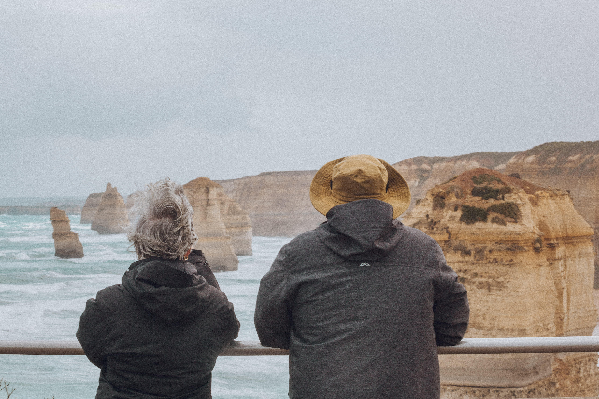

The scenery that will take your breath away.....

Take a helicpter rider around the twelve apostles for an enjoyable ride.
Take your love ones on a road trip with you, we will take care of the rest.
We gaurantee a safe and fun journey, if not we will refund you the money.
Here is a quote from the Visit Victoria's website:
Created by constant erosion of the limestone cliffs of the mainland beginning 10–20 million years ago, the stormy Southern Ocean and blasting winds gradually eroded the softer limestone, forming caves in the cliffs.
The caves eventually became arches and when they collapsed rock stacks up to 45 metres high were left isolated from the shore. View the 12 Apostles at sunrise and sunset as they change colour from dark and foreboding in shadow to brilliant sandy yellow under a full sun.
For more information please visit the Visit Victoria Website:
Visit VictoriaHow to get there:
You have three options:
- By Tour bus
- Rent a car
- Go on foot (Just joking!)
COVID Update:
Under the direction of the Chief Health Officer and in accordance with Department of Health and Human Services’ requirements, restrictions may be in place at the Twelve Apostles sights.